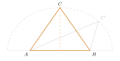
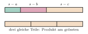

Aufgabe 6.11
Unter allen Dreiecken gleichen Umfangs, welches hat den grössten Inhalt?
- Vermuten Sie zunächst, welches Dreieck optimal ist
- Die Heronsche Formel kann hilfreich sein
- Nutzen Sie Symmetrieargumente
- Betrachten Sie, was bei Variation einer Seite passiert
Schritt 1: eine Seite festhalten

Man hält $A$ und $B$ fest. Bei festem Umfang ist auch $\overline{AC} + \overline{CB}$ fest, $C$ liegt also auf einer Ellipse mit den Brennpunkten $A$ und $B$. Der Inhalt ist $\frac{1}{2}\cdot\overline{AB}\cdot h$, und die Höhe $h$ ist am grössten im höchsten Punkt der Ellipse, genau über der Mitte von $AB$. Dort ist das Dreieck gleichschenklig.
Folgerung: Ein Dreieck, das nicht gleichseitig ist, hat eine Seite, über der es nicht gleichschenklig ist, und lässt sich damit noch vergrössern. Das grösste Dreieck muss also gleichseitig sein.
Schritt 2: die Formel von Heron

Mit dem halben Umfang $s = \frac{a+b+c}{2}$ gilt \[A = \sqrt{s\,(s-a)(s-b)(s-c)} .\] Der Faktor $s$ ist fest. Die drei anderen Faktoren sind positiv und haben die feste Summe $(s-a)+(s-b)+(s-c) = 3s - 2s = s$. Ein Produkt aus drei positiven Zahlen mit fester Summe ist am grössten, wenn alle drei gleich sind: \[(s-a)(s-b)(s-c) \le \left(\frac{s}{3}\right)^3,\] mit Gleichheit genau für $s-a = s-b = s-c$, also $a = b = c$.